Comprendre
Identifier vos activités essentielles, les actifs concernés, les dépendances et les dispositifs existants. Préciser les contraintes opérationnelles et les personnes à associer à la démarche.
Une équipe de cybersécurité qui prend le temps de comprendre avant d'agir.

Filiale de Brydge GroupUne activité à maintenir, des données à protéger, des engagements à tenir : la cybersécurité prend son sens dans ce qu'elle permet de préserver.
SICARE est une entreprise de services numériques spécialisée en cybersécurité, filiale de Brydge Group. Nous associons prestations, solutions technologiques et formations professionnelles pour aider les organisations à comprendre leur exposition, à définir leurs priorités et à renforcer leur capacité d'action.
Notre convictionLa qualité d'une intervention repose sur la compréhension du contexte, la maîtrise des compétences et la capacité à travailler avec les personnes concernées.
Notre nom porte une double lecture : le soin apporté aux systèmes d'information — S.I. care — et la précision d'une intervention ciblée.
Cette posture guide notre manière de travailler : écouter avant de recommander, examiner avant de conclure et intervenir avec un objectif défini.
Discrétion, précision, détermination. Trois exigences qui se traduisent dans la confidentialité des échanges, la rigueur des analyses et le suivi des engagements.
Une vulnérabilité technique, un accès mal maîtrisé, une dépendance critique ou une responsabilité mal définie peuvent fragiliser une même activité.
Nous relions ces dimensions pour comprendre comment les risques se combinent : systèmes, données, usages, organisation et compétences. Cette approche permet de situer les constats techniques dans leur contexte et de choisir les actions selon leurs effets attendus sur l'activité.
Elle accompagne aussi les transformations des organisations : adoption de l'IA, évolution des infrastructures, recours à de nouveaux prestataires ou développement de nouveaux services.
Notre rôle est de vous aider à construire une réponse proportionnée à votre exposition, à vos moyens et à vos priorités.
Identifier vos activités essentielles, les actifs concernés, les dépendances et les dispositifs existants. Préciser les contraintes opérationnelles et les personnes à associer à la démarche.
Relier les constats à leurs conséquences possibles. Expliquer les risques, comparer les options et déterminer les actions à engager.

Définir le périmètre, les responsabilités et les livrables, puis coordonner les interventions avec vos équipes et les acteurs concernés.

Évaluer les résultats selon les objectifs de la mission, documenter les points restant à traiter et transmettre les connaissances nécessaires à vos équipes.
Chez SICARE, la formation continue fait partie de notre manière d'exercer nos métiers. Les technologies, les menaces et les usages évoluent ; notre expertise doit évoluer avec eux.
Cette culture associe l'apprentissage, la pratique et la transmission. Approfondir une spécialité, préparer une certification pertinente, confronter ses méthodes ou partager un retour d'expérience contribue à la progression professionnelle.
Les enseignements tirés des missions nourrissent cette réflexion dans le respect de la confidentialité. Ils permettent d'identifier les compétences à renforcer et les pratiques à faire évoluer.
Les liens avec ESTUDECH enrichissent cette dynamique : les professionnels peuvent approfondir leurs connaissances et, lorsqu'ils le souhaitent, développer une activité pédagogique.
Pour nos clients, cette démarche soutient la pertinence des recommandations et la qualité des interventions. Pour nos équipes, elle donne une place durable à l'apprentissage dans leur parcours.
La confiance se construit avec des interlocuteurs dont le rôle est clair et des engagements que l'on peut vérifier.
Les intervenants sont mobilisés selon le besoin et le périmètre défini. La maîtrise du domaine s'accompagne d'une capacité à expliquer les constats, à travailler avec vos équipes et à tenir compte de vos contraintes.
Objectifs, responsabilités, livrables et modalités de suivi sont établis pour la mission. Les limites du périmètre et les éventuels besoins complémentaires sont explicités.
Nous précisons les faits, les hypothèses et les limites de nos analyses. Lorsqu'une solution est proposée, nous expliquons son intérêt pour votre besoin et le rôle de SICARE dans sa fourniture ou son intégration.
Les accès et les informations confiés sont encadrés selon les besoins de l'intervention. Toute utilisation d'un nom, d'un témoignage ou d'une référence client dans notre communication nécessite une autorisation préalable.
Brydge Group est le groupe propriétaire de SICARE. Il relie expertise professionnelle, éducation et innovation au sein d'un projet commun.
SICARE y porte les prestations, les solutions et les formations professionnelles en cybersécurité.
ESTUDECH apporte sa dimension d'enseignement supérieur et de transmission.
L'incubateur FactoryD complète cet ensemble par l'expérimentation et l'accompagnement de projets innovants.
Ces complémentarités ouvrent des possibilités de coopération et d'évolution professionnelle. SICARE assure le cadrage et la réalisation des missions qui lui sont confiées.
Développer son expertise, prendre des responsabilités, transmettre ou contribuer à l'innovation : une carrière peut évoluer dans plusieurs directions, et certaines activités peuvent se combiner.
Renforcer une spécialité, élargir son périmètre d'intervention, piloter des missions ou accompagner une équipe : la progression se construit à partir des compétences, des aspirations et des besoins de SICARE.
Les professionnels qui souhaitent intervenir au sein d'ESTUDECH peuvent contribuer à des enseignements, des ateliers, des contenus pédagogiques ou à l'accompagnement de projets, selon leur expertise et les besoins de l'école.
Cette activité peut compléter leur rôle chez SICARE et leur permettre de développer de nouvelles compétences pédagogiques.
Au sein de FactoryD, les professionnels de SICARE peuvent accompagner des porteurs de projet, apporter leur expertise et participer à l'expérimentation de solutions.
Cette contribution permet de développer une expérience du mentorat et de l'innovation, en complément des missions réalisées chez SICARE. Elle s'organise selon les aspirations de chacun, les compétences mobilisées et les besoins des projets accompagnés.
Le développement international de Brydge Group ouvre des perspectives de missions, de coopérations entre équipes et de mobilité.
Ces expériences permettent de découvrir d'autres environnements professionnels, de confronter ses pratiques et d'enrichir sa compréhension des enjeux numériques.
Chaque parcours se construit avec la personne concernée, selon ses souhaits, les compétences requises et les opportunités disponibles.
Nous souhaitons rencontrer des professionnels qui aiment comprendre, agir et partager leurs connaissances, avec le souci du travail bien fait et du respect des engagements.
Présentez-nous votre expérience, les sujets qui vous mobilisent et la direction que vous souhaitez donner à votre parcours.
Vous souhaitez examiner votre exposition, préciser un besoin ou préparer une intervention ? Échangeons sur votre activité, vos contraintes et vos priorités.